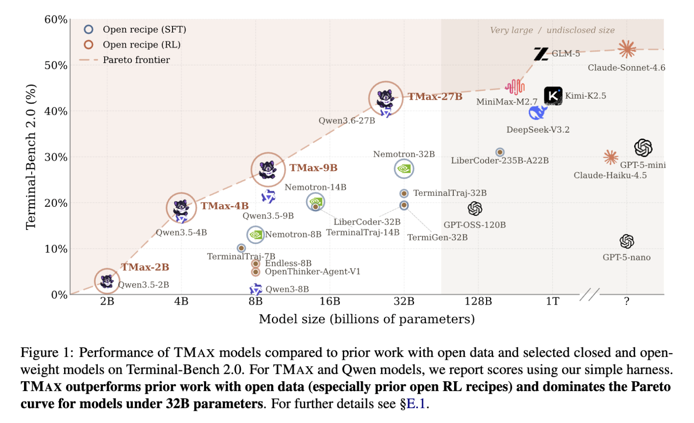

2026年半ばの現在、Reinforcement Learning (RL) を用いたLarge Language Model (LLM) のPost-trainingは、完全に新しいフェーズへと突入している。2025年初頭に起こったRLVR（Reinforcement Learning for Verifiable Reasoning）の革命では、標準的なRLライブラリを用いて数学ベンチマークの性能をhillclimbingさせる手法が広く普及した。ベースモデルに対するRLの適用が比較的安定して行えた当時とは対照的に、現在の焦点はより複雑でインタラクティブなタスク、すなわち「Terminal Agents」へと移行している。
エージェントの領域におけるタスクは極めて難易度が高い。高度なtool-use、自動で履歴を管理する複雑なharnessへの適応、そして何よりも、ほんのわずかな評価指標の改善のために莫大な学習リソースと試行錯誤が要求される。本稿では、Terminal Agentsの強化学習において現在最も強力なオープン・レシピとデータセットを提供する論文「TMAX: A simple recipe for terminal agents」を取り上げ、その技術的背景から直面する課題、そして提案された画期的なアプローチに至るまでを詳細に解説する。
Terminal AgentsにおけるRL学習の特異性と課題
AIエージェントの能力を測る上で、出力されたテキストを静的に評価する従来のアプローチは限界を迎えている。今日では、Terminal-Benchに代表されるように、隔離されたDocker環境内で実際のコマンドライン操作を行わせ、その最終状態（Environment’s final state）を自動検証する堅牢なベンチマークが標準となっている。
このような実世界に即した環境での学習において、我々は大きな障壁に直面している。特に、Qwen 3.5のようにすでにタスクに特化して重度に事前学習（dense training）された小規模・高機能モデルに対して、さらに性能を向上（hillclimbing）させることは至難の業である。
現在のRL研究は、単に「より早く学習させるアルゴリズム」の探求から、経験的な厳密さ（Empirical rigor）の追求と、インフラストラクチャに大きく依存する学習プロセスの「安定化（Stability）」へと急速にシフトしている。TMAXは、この困難な領域においてオープンモデルをhillclimbingさせるための実践的な教訓の結晶である。
TMAX-15K：合成データ生成における難易度と多様性の制御
Terminal Agentsの学習における最大のボトルネックの一つが、高品質な環境データの枯渇である。Synthetic Data Generation（合成データ生成）はスケールする解決策を提供するが、同時にModel Autophagy Disorder（モデルの自己崩壊）や、Simulation-to-reality gap（シミュレーションと現実の乖離）といった課題を孕んでいる。
TMAXチームは、強力なフロンティアモデルであるGemini-3-ProをGeneratorとして活用し、「TMAX-15K」という14,600ものRL環境インスタンスからなる巨大なデータセットを構築した。これは過去に公開されたTerminal Agents向けのデータセットと比較して2.5倍以上の規模を誇る。彼らのデータ生成の革新性は、独自のTaxonomyに基づく精緻なサンプリング手法にある。
- 難易度の明示的な制御（Explicit Calibration）： 従来のデータセットは、極端に簡単か全く解けないかの二極化（Bi-modal distribution）に陥りがちであった。TMAXでは、数個のシェルコマンドで済むものから、30〜60のコマンドを要する複雑なワークフローに至るまで、Task ComplexityとCommand Complexityの軸を設け、難易度を明示的に制御している。
- ドメインのバランスとペルソナ（Persona Diversification）： 既存のデータはSoftware Engineering（バグ修正など）に偏る傾向があったが、TMAX-15Kはセキュリティ、データ処理、システム管理など9つのドメインを均等にカバーする。さらに、各タスクにドメイン特有のペルソナ（例：「午前3時の障害対応にあたるインシデントレスポンダー」）を付与することで、エッジケースを含む多様な軌跡（Trajectories）を生み出している。
- 連続的な学習シグナル（Graded Verifiers）： 単なるテキストの完全一致（Exact string equality）ではなく、指定した閾値を満たすか（Metric-threshold）、安全な入力を通しつつ悪意のある攻撃をブロックできるか（Adversarial-corpus）といった、連続的かつ段階的な検証（Verifiers）を導入している。これにより、エージェントは0か1かではない、よりリッチな報酬シグナルを受け取ることができる。
RLレシピ：インフラへの依存と学習の安定化
TMAXが提示するRLレシピは、斬新な数学的アプローチというよりも、実用的な「インフラストラクチャと学習プロセスの調和」に焦点を当てている。前述の通り、Qwen 3.5のようなモデルをターミナルタスクでhillclimbingさせるための最大の課題は学習の安定性である。
DPPOによる方策の崩壊防止
エージェントの操作は長期にわたる（Long-horizon）。時には20ステップを超えるようなMulti-turnのインタラクションにおいて、標準的なGRPOを用いた学習は容易に崩壊（Collapse）を引き起こす。TMAXでは、推論時と学習時のLogprob（対数確率）の乖離が特定の閾値を超えた場合にトークンをマスクする、Total Variation (TV) Divergenceに基づくDPPO (Divergence Proximal Policy Optimization) を採用している。これにより、探索の過程で方策が致命的に破損することを防いでいる。
FP32 LM Headによる数値的不一致の解消
RL学習において、vLLMなどを用いた推論エンジン（Rollout）と学習プロセス間の微小な数値的不一致は、連鎖的に大きなエラーを引き起こす。特にQwen 3.5のアーキテクチャではこの問題が顕著であった。TMAXのレシピでは、Language Model Headの計算と状態保持をあえてFP32（単精度浮動小数点）で行うことで、Logprobのズレを劇的に減少させ、学習の安定化に大きく寄与している。
Group Sizeの最適化とインフラ管理
ターミナルタスクのRLは、Sandbox内でのプロセス管理やコンテナの起動・破棄といった重いインフラ処理に依存する。TMAXでは、プロンプトあたり32回という大きなGroup Sizeを設定して探索の分散を抑えるとともに、Active Samplingを導入して非同期学習の効率を極限まで高めている。
Generalization（汎化性能）の証明：タスクとHarnessを越えて

これら独自のデータセットと安定化されたRLレシピを用いて学習された「TMAX-9B」は、9Bという小規模なパラメータ数でありながら、Terminal-Bench 2.0において27%の成功率を達成した。これは32Bクラスのオープンモデルを凌駕し、Claude Haiku 4.5のようなクローズドモデルの性能に迫るものである。
ここで一つの疑問が生じる。このモデルは単にTerminal-Benchの形式や、学習に用いた特定のHarnessに過学習（Harness-fitting）しているだけではないのか？ TMAXの研究はこの懸念を見事に払拭している。
- タスク間の汎化： TMAX-9Bは、ソフトウェアエンジニアリング能力を測るSWE-Bench Verifiedにおいて5ポイント以上の向上を見せただけでなく、純粋な数学推論タスクであるAIMEにおいても大幅なスコア向上を記録した。
- Harnessの汎化： 学習時とは異なるToolsetsやシステムプロンプトを与えられたゼロショットの環境下においても、ベースモデルを確実に上回るパフォーマンスを発揮した。
これらの結果は、TMAXのRL手法が表面的なパターンの暗記ではなく、モデルの基礎的な推論能力、計画能力、そして自律的なTool-useの能力そのものを押し上げていることを強く証明している。
まとめと今後の展望
TMAXは、フロンティアなターミナルタスクにおいてモデルをhillclimbingさせるための、現在利用可能な最高のオープンリソースである。もし著者らが「RL environments startup」を立ち上げていれば、このデータとインフラのノウハウは数百万ドルで取引される価値があるだろう。
AIエージェントのPost-trainingにおいて、質の高いSynthetic Data Generationと、複雑なインフラストラクチャにおけるRLの安定化は車の両輪である。コンテナ実行環境のさらなる効率化や、強力なGeneratorモデルへの依存度の低減など、学術的な課題は依然として残されている。しかし、TMAXが提示したこの「シンプルなレシピ」は、AIエージェントが真に実世界の複雑なコンピュータ環境を自律的に操作できるようになるための、極めて重要なマイルストーンである。
Reference